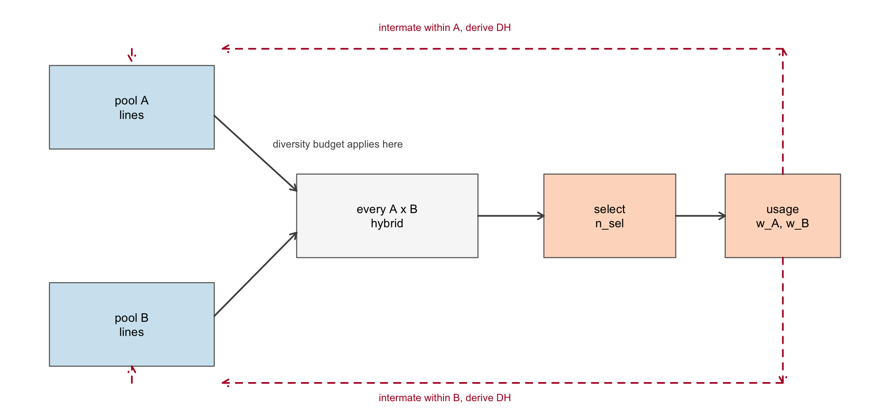
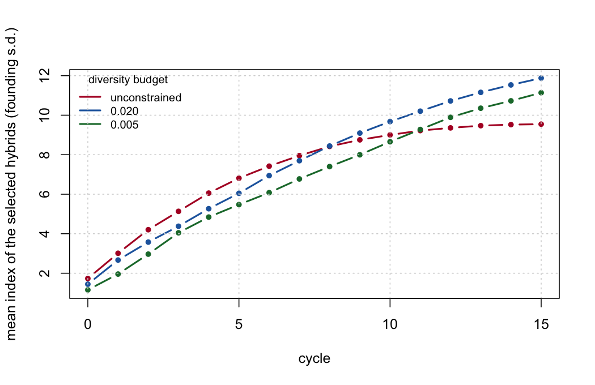
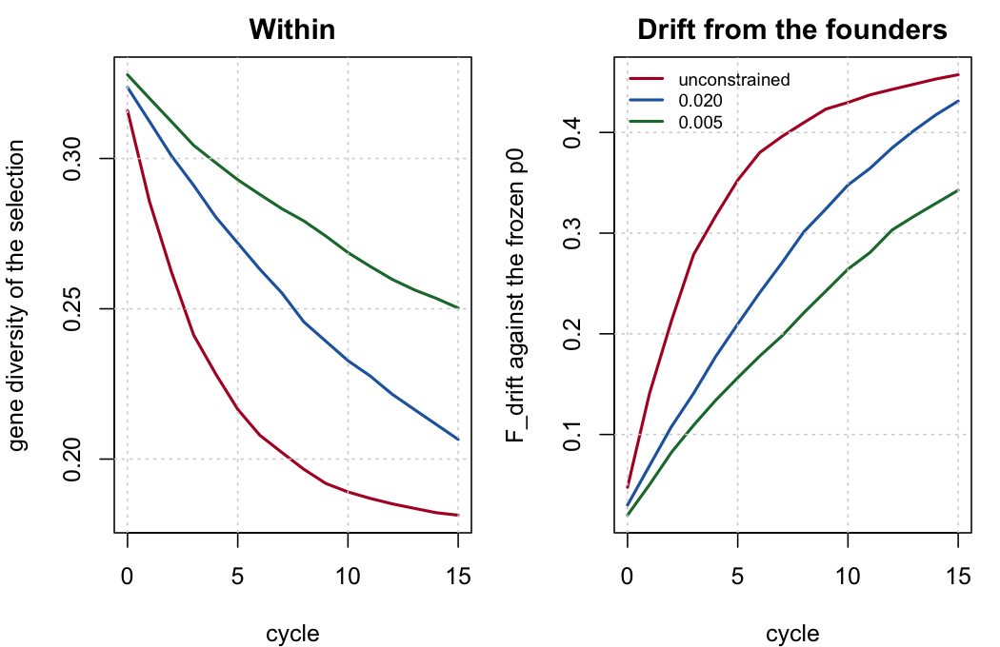

line_weights() returns.Chapter 18 will end with a list of things its numbers cannot tell you, and the last item on it is the one that matters most: one cycle, not a trajectory. A one-cycle constraint is not a multi-cycle policy.
Every result in this book so far has been a single round of hybrid selection. But nobody pays an index cost for diversity in order to have more diversity. They pay it because of what next cycle can do with it, and that argument has been taken on faith for eleven chapters. This chapter runs the programme forward and checks.
Selection happens at the hybrid level, on \(A \times B\) crosses. Recycling happens within pool. That asymmetry is the whole design, and getting it backwards would quietly destroy the thing Chapter 8 says the programme is selling: a doubled haploid derived from an \(A \times B\) hybrid is a blend of both pools, and a programme that recycled hybrids would merge its heterotic groups within a few cycles.
What crosses the pool boundary is information – which lines proved themselves in hybrid combination – and never germplasm.

line_weights() returns.run_cycles() is the loop. The assumptions it runs under, stated once:
C1. Loci are unlinked. Every marker segregates independently, so no linkage disequilibrium builds up and there is no Bulmer effect on the genic side. This is the same abstraction Chapter 3 already makes; Chapter 4 is where linkage is modelled properly, and build_map()/meiosis() are there if this ever has to change.
C2. Recycling is by doubled haploid. Two parents are drawn within pool with probability proportional to usage, and one DH is derived per pair. Because the lines are inbred, (GL[i, ] + GL[j, ]) / 2 lies in \(\{0, 0.5, 1\}\) and a single Bernoulli draw per locus is an exact gamete, not an approximation.
C3. Pool sizes are constant. 25 lines per pool, every cycle. A real programme varies this, and the variation is itself a diversity decision.
C4. Marker effects are fixed. The same \(\boldsymbol{\beta}\) throughout, so the index is comparable across cycles and gain accumulates on the founding cycle’s scale. No new mutation, no changing selection target, no genotype-by-environment.
C5. The base \(p_0\) is frozen at cycle 0 and carried forward. This is the subject of the next section.
C6. The pool is closed unless a germplasm injection is scheduled.
C7. The index is known without error. Chapter 10 Finding 5 measures what relaxing this does within a cycle; the effect compounds across cycles and is not modelled here. Every gain figure below is therefore an optimistic ceiling, for all budgets equally.
C8. Selection is on the hybrid only. No per-se line selection, no stage structure. Chapter 11 is where the multi-stage version lives.
build_ctx() sets p0 <- colMeans(X) on every call. Run it fresh each cycle and the drift lens is re-anchored to the population it is supposed to be measuring drift away from, which reports approximately zero loss forever while the pool erodes underneath.
The demonstration needs two generations and nothing else:
sim <- simulate_pools(n_A = 25, n_B = 25, m = 2000, seed = 1)
p0 <- colMeans(sim$X) # the founding base, frozen here
GL5 <- sim$GL
set.seed(7)
for (t in 1:5) { # five generations of drift
GL5 <- rbind(next_pool(GL5[1:25, ], rep(1, 25), 25),
next_pool(GL5[26:50, ], rep(1, 25), 25))
}
ped5 <- expand.grid(a = 1:25, b = 25 + 1:25)
X5 <- (GL5[ped5$a, ] + GL5[ped5$b, ]) / 2
drift <- function(X, base) {
p <- colMeans(X); k <- base > 1e-6 & base < 1 - 1e-6
mean((p[k] - base[k])^2 / (base[k] * (1 - base[k])))
}
c(frozen_p0 = drift(X5, p0),
reanchored = drift(X5, colMeans(X5)))
#> frozen_p0 reanchored
#> 0.08693168 0.00000000The second number is zero by construction: a population is never drifted from itself. Five generations of real drift have been reported as none.
Chapter 7 named it as the single most frequent error in applying F_hom and F_drift, and Chapter 18 repeats it in the operational checklist. run_cycles() therefore takes p0 once and overwrites it on every rebuilt context. It is one assignment, and every drift number in this chapter depends on it.
Three budgets, fifteen cycles, five seeds each. alpha_max = Inf is the unconstrained programme: it takes the best hybrids it can find and accepts whatever that costs.

| cycle | alpha <= 0.005 | alpha <= 0.02 | unconstrained |
|---|---|---|---|
| 0 | 1.16 | 1.45 | 1.73 |
| 3 | 4.05 | 4.38 | 5.13 |
| 5 | 5.47 | 6.05 | 6.81 |
| 8 | 7.40 | 8.44 | 8.42 |
| 10 | 8.66 | 9.68 | 9.00 |
| 12 | 9.89 | 10.72 | 9.36 |
| 15 | 11.14 | 11.88 | 9.55 |
The unconstrained run wins the first eight cycles and loses every cycle after that. By cycle 15 the \(\alpha \le 0.02\) programme is 2.33 standard deviations ahead – 24% more gain, from a programme that gave up 17% of its gain in year one.
The mechanism is visible in the diversity panel:

The unconstrained programme is not out-selected. It is out of material. Its \(F_{\text{drift}}\) reaches 0.41 by cycle 8 and only 0.457 by cycle 15 – it has converted almost everything it had into gain, early, and then has nothing to convert.
The trajectories above use a greedy sweep, which is what makes fifteen cycles by five seeds by three budgets affordable. Chapter 14’s differential evolution finds slightly better plans per cycle. Re-running one seed with it:
| cycle | 0.020 de | 0.020 greedy | unconstrained de | unconstrained greedy |
|---|---|---|---|---|
| 0 | 1.39 | 1.37 | 1.53 | 1.53 |
| 4 | 5.53 | 5.98 | 5.22 | 6.60 |
| 8 | 8.44 | 9.56 | 7.40 | 9.08 |
| 12 | 10.47 | 11.73 | 7.99 | 9.84 |
The crossover reproduces. Under DE the constrained programme is ahead by 2.48 at cycle 12, against 1.89 under greedy. The cheap selector understates the case rather than manufacturing it.
There is a second thing in that table worth not glossing over: DE reaches a lower absolute index than greedy by cycle 12 in both columns, despite finding a better plan in every individual cycle. It uses more of the budget each time – \(\alpha = 0.0200\) against greedy’s \(0.0177\) at cycle 0 – and spends the difference out of the next cycle’s inheritance. Per-cycle optimality is not multi-cycle optimality. This is one seed and should be read as a flag rather than a result, but it is the same trade the whole chapter is about, one level up.
Chapter 18’s checklist says to regress \(\log(1 - F)\) on cycle and check that it is linear, because curvature means a non-constant rate. Doing it:
rate <- do.call(rbind, lapply(unique(traj$budget), function(b) {
d <- aggregate(F_drift ~ cycle, traj[traj$budget == b, ], mean)
f <- lm(log(1 - F_drift) ~ cycle, d[-1, ])
data.frame(budget = b, dF_per_cycle = -coef(f)[["cycle"]],
Ne = 1 / (-2 * coef(f)[["cycle"]]), R2 = summary(f)$r.squared)
}))
fmt(rate, 4)| budget | dF_per_cycle | Ne | R2 |
|---|---|---|---|
| unconstrained | 0.0292 | 17.1146 | 0.8534 |
| 0.020 | 0.0358 | 13.9841 | 0.9931 |
| 0.005 | 0.0265 | 18.8898 | 0.9976 |
The diagnostic fires, and it fires on the unconstrained run: \(R^2 =\) 0.853 against 0.998 for the tightest budget. The unconstrained rate is not constant because it is decelerating – there is progressively less left to lose. Read naively its fitted \(\Delta F\) is the lowest of the three, which is exactly backwards; the fit is meaningless for a saturating series, and the \(R^2\) column is what says so.
Section 9.3 insists that the status number is a static descriptor and not a drift projection. Here is the size of the discrepancy: \(N_s\) computed on the selected hybrids averages 0.67 across all of these runs, while the realised effective size implied by the drift they actually accumulated is between 14 and 19.
They are not the same quantity and are not off by a constant. Report \(N_s\) as a descriptor of a plan, and measure \(\Delta F\) from the trajectory.
Every seed crosses over, and the cycle at which it happens is the useful number:
| seed | alpha <= 0.02 | alpha <= 0.005 |
|---|---|---|
| 1 | 8 | 11 |
| 2 | 12 | 15 |
| 3 | 10 | 12 |
| 4 | 7 | 10 |
| 5 | 5 | 9 |
The tighter budget always crosses later and always ends higher. That is the whole trade, and it makes the choice of \(\alpha_{\max}\) a function of the planning horizon rather than a matter of taste:
| Planning horizon | Budget | Why |
|---|---|---|
| 3 cycles or fewer | do not constrain | the crossover has not happened yet; the constraint is pure cost |
| about 5 to 8 cycles | alpha ~ 0.02 | the looser budget has crossed and the tighter one has not |
| 10 cycles or more | alpha ~ 0.005 to 0.02 | both have crossed; the tighter budget is still climbing |
| indefinite | constrain, and inject | no closed budget holds forever – see below |
The caveat matters more than the numbers. n_sel = 60 out of 625 candidates from 25 + 25 lines is a small, intensely selected programme, and the crossover arrives sooner the harder the selection is. What transfers is the shape: an unconstrained programme leads early, saturates, and is passed.
Chapter 14 carries max_use through every selector, defaulting to NULL everywhere, because within a single cycle a usage cap only costs index. Across cycles it is buying something, and this is where it can be seen. Same budget (\(\alpha \le 0.02\)), same seeds, three caps:
| max_use | cycle | index | GD | F_drift | max_line |
|---|---|---|---|---|---|
| 3 | 0 | 0.491 | 0.329 | 0.005 | 3.0 |
| 6 | 0 | 1.305 | 0.323 | 0.025 | 6.0 |
| none | 0 | 1.446 | 0.324 | 0.030 | 12.4 |
| 3 | 5 | 2.423 | 0.296 | 0.104 | 3.0 |
| 6 | 5 | 5.788 | 0.270 | 0.194 | 6.0 |
| none | 5 | 6.047 | 0.272 | 0.210 | 15.4 |
| 3 | 10 | 4.058 | 0.268 | 0.185 | 3.0 |
| 6 | 10 | 9.216 | 0.233 | 0.316 | 6.0 |
| none | 10 | 9.677 | 0.233 | 0.348 | 15.4 |
| 3 | 15 | 5.532 | 0.247 | 0.250 | 3.0 |
| 6 | 15 | 11.268 | 0.210 | 0.395 | 6.0 |
| none | 15 | 11.877 | 0.207 | 0.431 | 16.4 |
max_use = 6 costs 5% of cycle-15 gain and holds \(F_{\text{drift}}\) to 0.395 against 0.431, while the uncapped programme leans on one line 16 times in its final cycle. max_use = 3 is too tight: it halves the gain and is not compensated.
Note which lens the cap moves. Gene diversity at cycle 15 is essentially the same with the cap and without it (0.21 against 0.207), because \(\alpha\) is already pinning that. The difference shows up in \(F_{\text{drift}}\), which is the lens Chapter 7 established the constraint does not pin. The cap is a handle on the uncontrolled lens, which is exactly why it is worth having in addition to the budget and not instead of it.
This changes no default. max_use remains NULL throughout the package.
No closed budget holds indefinitely: all three trajectories are still losing diversity at cycle 15, only at different rates. Chapter 16 and Chapter 18 both prescribe periodic germplasm injection, and Chapter 5 is the machinery that performs it – introgression is how new material enters an elite pool without dragging the rest of the genome with it.
Replacing six of the twenty-five lines in each pool with founding-generation material at cycle 8:
| regime | cycle | index | GD | F_drift |
|---|---|---|---|---|
| closed | 7 | 7.697 | 0.255 | 0.270 |
| injected | 7 | 7.697 | 0.255 | 0.270 |
| closed | 8 | 8.440 | 0.246 | 0.301 |
| injected | 8 | 6.469 | 0.283 | 0.182 |
| closed | 10 | 9.677 | 0.233 | 0.348 |
| injected | 10 | 7.865 | 0.270 | 0.233 |
| closed | 12 | 10.722 | 0.222 | 0.385 |
| injected | 12 | 9.391 | 0.254 | 0.291 |
| closed | 15 | 11.877 | 0.207 | 0.431 |
| injected | 15 | 11.283 | 0.234 | 0.364 |
The cost is immediate and the return is slow. Gene diversity jumps from 0.246 to 0.283 and \(F_{\text{drift}}\) falls by 40%, but the index drops 1.97 standard deviations on the spot, and has not repaid by cycle 15 (11.28 against 11.88).
That is the honest result and it should not be dressed up. Within this horizon injection buys a restored resource and not more gain; it is the same trade as the diversity budget itself, at a longer wavelength and a steeper entry price. The run that would repay it is longer than fifteen cycles, and the founders used here are the programme’s own – unadapted material from a genebank would cost considerably more.
Appendix D’s screened corpora hold 687 plant and 324 animal records, of which a substantial block concerns recurrent selection and long-term gain: two-part and rapid-cycling programme designs, optimal cross selection evaluated over cycles rather than within one, and simulation studies of the long-term effects of genomic selection on both gain and variance.
The qualitative shape found here – early advantage to unconstrained selection, saturation, then a crossover – is the standard finding in that literature. Gorjanc et al. (2018) optimise cross selection explicitly for long-term gain in two-part programmes and report the same tension between per-cycle and multi-cycle optimality that the DE comparison above ran into. Allier et al. (2019) separate the short-term and long-term components directly. Wientjes et al. (2022) track what genomic selection does to additive variance over many generations, which is the mechanism behind the saturation seen here, and Doublet et al. (2019) measure the diversity cost in three dairy cattle breeds where the cycles have actually been run. Rutkoski (2019) is the counterpart caution: realised rates of gain are harder to estimate from an operating programme than a simulation makes them look. Müller et al. (2018) is the closest thing in the corpus to the selection criterion used here, chosen for its effect on later cycles rather than the current one. What Chapter 16 listed as unestablished was something narrower and remains so: nobody has published the crossover for a \(\theta\)-constrained hybrid maize programme measured against a same-size resampling baseline. This chapter demonstrates it in simulation, under C1-C8, which is not the same as establishing it in an operating programme.
Chapter 8 argued that what builds a heterotic pattern is divergence aligned with dominance, and that selection on cross performance is the only process in the programme that searches for it. This chapter is that process running. The \(GD_{BS}\) column of cycles_trajectory.csv rises in every run – the pools do separate under reciprocal selection, as they should – while \(GD\) within them falls, which is the trade Chapter 9’s partition was built to expose.
Chapter 18 is the single cycle, in operational detail. Read it as cycle 0 of this chapter, and read its final checklist – freeze \(p_0\), keep the per-stage ledger, check \(\log(1 - F)\) for curvature, plan germplasm injection – as the four things this chapter has now shown the consequences of skipping.